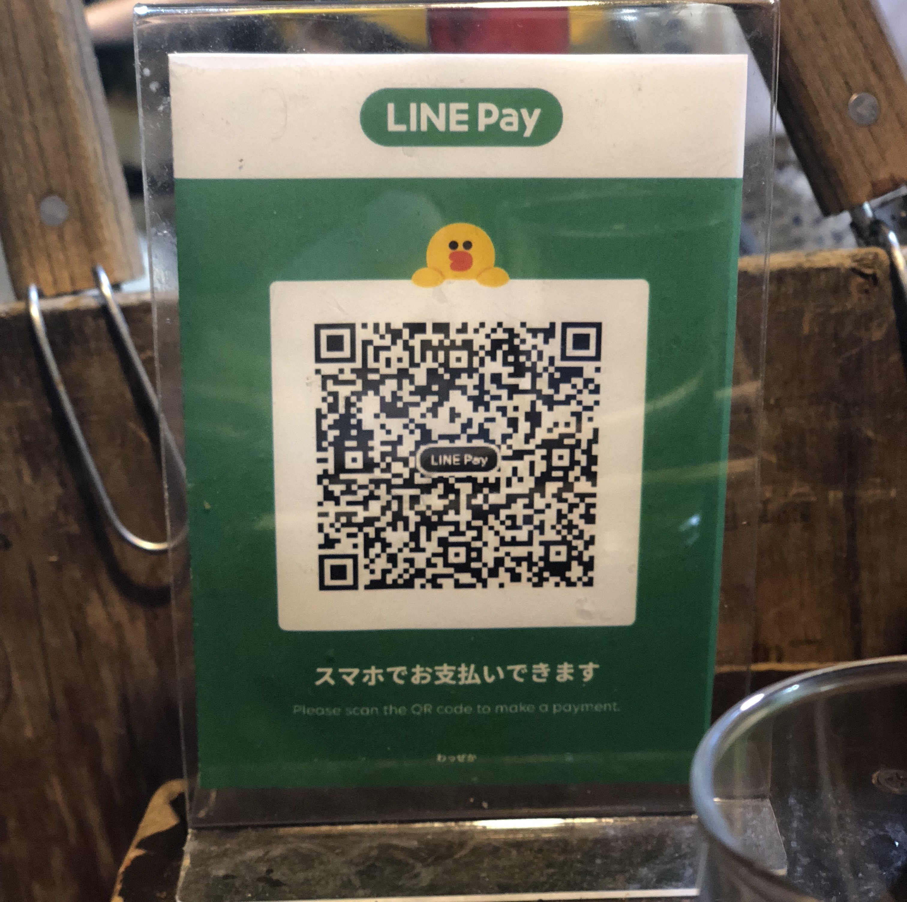
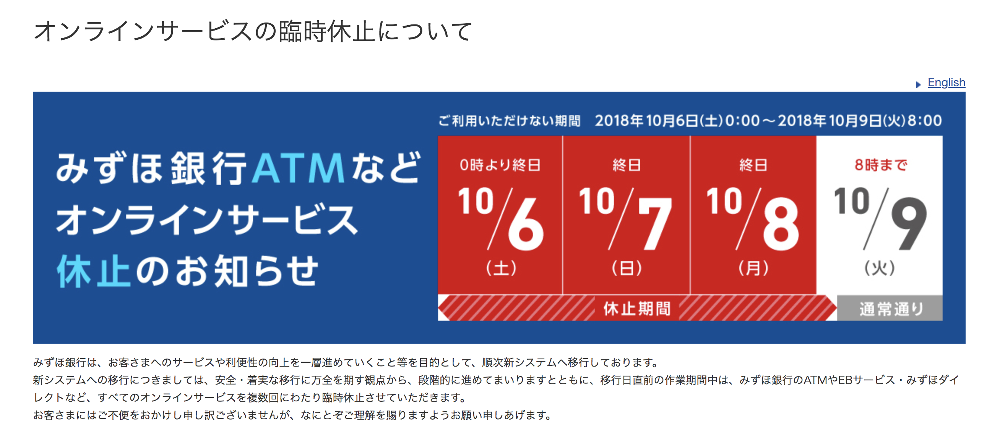
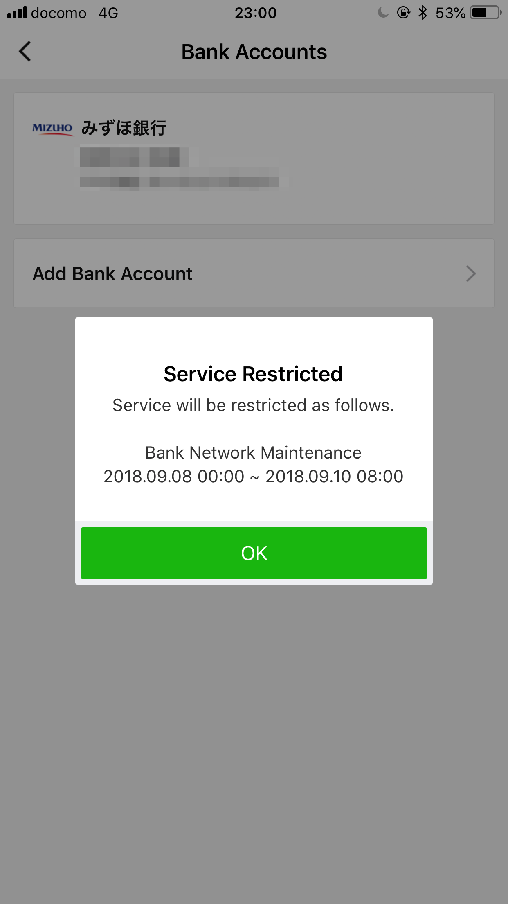
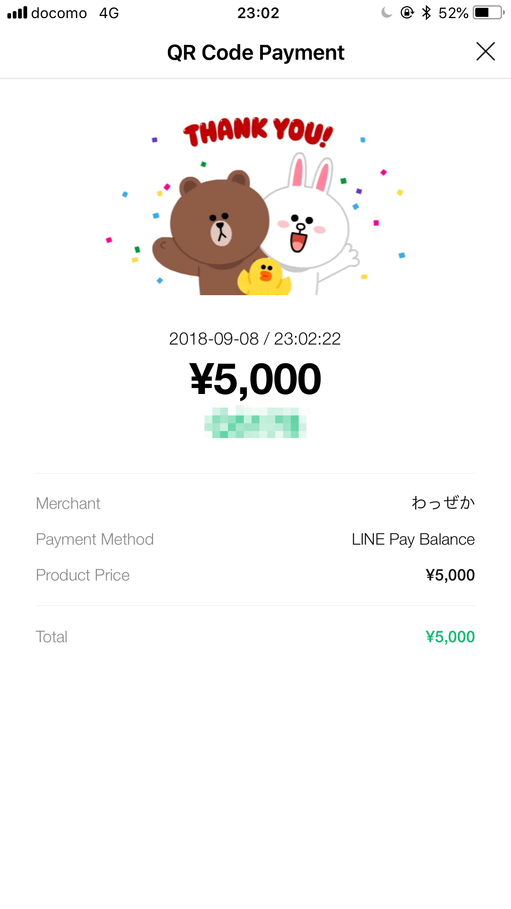
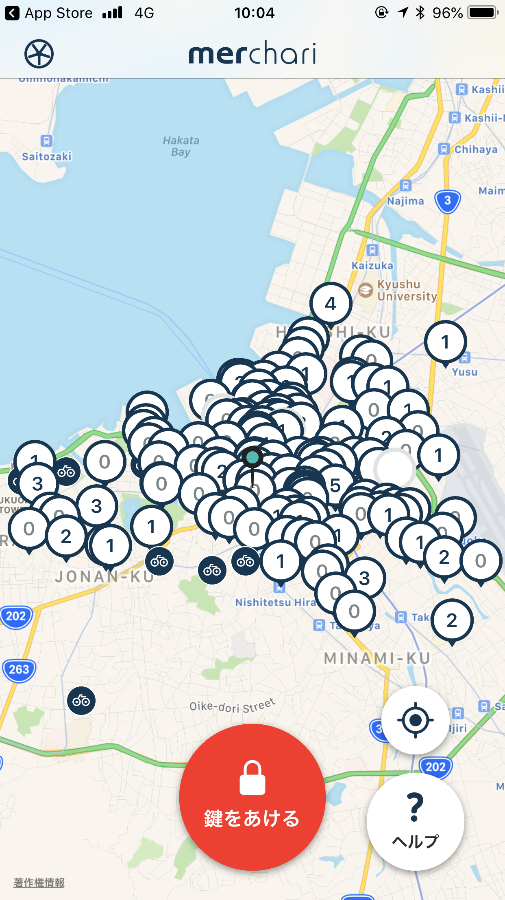
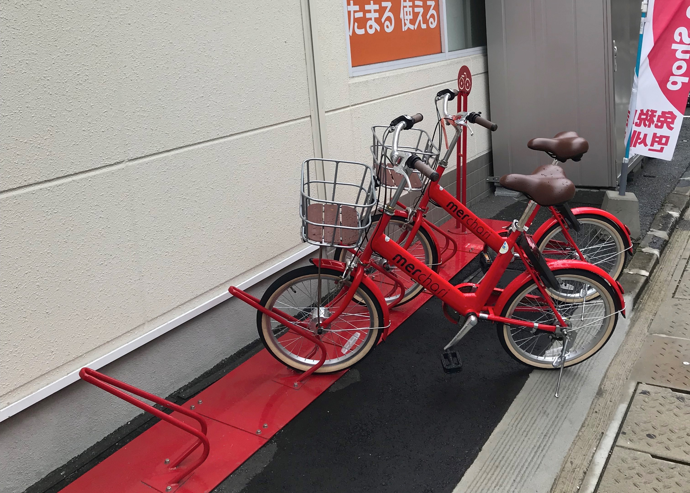

福岡で LINEPay の実証実験 + メルチャリを体験してきた
友人と週末旅行を兼ねて，福岡に行った(ほぼ初)．主目的は食べ歩き，土日 1 泊 2 日で合計 8 件くらいハシゴした．1 日目に詰め込み過ぎて日が変わるころには胃が死んでいた．合間で LINEPay と メルチャリを体験した．
LINEPay
ちょうど実証実験中だったので，初 LINEPay の支払いをしてみた．
9月1日（土）から9月30日（日）までの期間中、福岡市の屋台を対象に、ご飲食代をLINE Payにてお支払いいただくと、期間中は毎日！お支払い金額半額分のLINE Pay残高を還元いたします！
2018年10月下旬頃，支払いされた LINEPay アカウントにディスカウント分の残高が付与されるスキームでその場で半額になるわけではない．また，LINE Pay残高付与上限額はお1人様2,000円/日 と制限もある．屋台 MAP には 14 店舗載っていたが，実際には屋台が出ていないところもあった．歩いて移動していたのでどこが実際に出ているのかがわかりやすいと助かる．．．

バーコードを LINEPay 画面から読み取ると，取引開始．
支払いの合計金額は 5900円，チャージしていた 5000 円だと足りなかった．入金しようとしたのだが連携していたみずほ銀行がメンテナンスで入金できなかったorz…ちょうどみずほ銀行の臨時メンテナンスと被っているのを忘れていた笑


仕方なくチャージ分全額と，残り 900 円は現金で支払った．店員さんは手元の iPhone Line アプリから支払いのトランザクション結果を確認して支払い完了をチェックしていた．

屋台は特に現金の管理とか面倒くさそうなので，特に普及すると便利そう．
merchari メルチャリ
アプリインストールすると，メルカリアプリのインストール情報でシングルサインオンできる．地図から最寄りのポートを探して鍵を開ける．メルチャリポートは想定より多かったが，空きが少なかった(“0”と表示されているところが空きがないところ)．


#メルチャリ アプリインストールからライド開始、駐輪までの導線がスムーズ過ぎて神🚲💨 4円/分らしいが、キャンペーンなのか無料だった pic.twitter.com/vKhfQcht0C
— tanakaworld 🧢 (@_tanakaworld) September 9, 2018
最後は自転車の鍵を閉めて暫くすると，停車したことになり完了した．とても体験がスムーズでよかった一方で，タイヤの空気が足りなくて若干こぎづらかったのと，停車するときにメルチャリポートの空きを探すのに手間取った．
2018年8月22日〜11月末日まで，東京都国立市でも実証実験が実施されているとのこと．
行ったところリスト
水炊き鍋 (@ Mizutaki Nagano in 福岡市, 福岡県 w/ @cokookie) https://t.co/QXc92okwK5
— tanakaworld 🧢 (@_tanakaworld) September 8, 2018
- コスパがとてもよい水たき鍋のお店
I'm at Kawaya in 福岡市, 福岡県 w/ @hirakumoyu https://t.co/QK8cYyGlxk
— tanakaworld 🧢 (@_tanakaworld) September 8, 2018
- 串焼き屋，鶏皮が有名
I'm at 餃子屋 弐ノ弐 警固店 in 福岡市, 福岡県 https://t.co/t51TCdX65l
— tanakaworld 🧢 (@_tanakaworld) September 8, 2018
- かわ屋の目の前の餃子屋
- 餃子のサイズがとても小さい
- 大勢で入れる，若者が行くところらしい
I'm at Wazzeka in 福岡市博多区, 福岡県 https://t.co/LMZLBjJ4lo
— tanakaworld 🧢 (@_tanakaworld) September 8, 2018
- LINEPay で支払いしたラーメン屋
- 客引きしていた店員さんが三浦春馬に激似
I'm at 博多餃子 游心 in Fukuoka https://t.co/q1xjqrAIZx
— tanakaworld 🧢 (@_tanakaworld) September 8, 2018
- タクシーの運転手から教えてもらった，美味しい餃子屋(2 店舗目)
- ラストオーダー間際に滑り込んだ
- 鉄板にのった餃子が出てきた
限界突破 (at @IchiranJapan in 福岡市, 福岡県) https://t.co/3rkYKVyxxA
— tanakaworld 🧢 (@_tanakaworld) September 8, 2018
- 「釜だれとんこつ」が食べられる唯一の店
- 味は豚骨醤油っぽい感じ？
- この日は食べすぎて，味わう余裕はなかったorz
I'm at @manu_coffee in 福岡市, 福岡県 w/ @cokookie https://t.co/0MIn97igp1
— tanakaworld 🧢 (@_tanakaworld) September 9, 2018
- 朝ごはん
- 店内がかわいい
ひらおさんを食べに来た (@ Tempura-dokoro Hirao in 福岡市, 福岡県 w/ @cokookie) https://t.co/TJ1fxE1k9l
— tanakaworld 🧢 (@_tanakaworld) September 9, 2018
- 有名な天ぷら屋
- 12:00 前に行ったら長蛇の列で，1時間強待った
I'm at Dazaifu Tenmangu Shrine in 太宰府市, 福岡県 https://t.co/HKfaGv30jx
— tanakaworld 🧢 (@_tanakaworld) September 9, 2018
- 菅原道真を祀っている神社
- 仲見世通りには，名物の梅をモチーフにした食があった
- 太宰府駅前の一蘭は，器が 5 角形らしい
まとめ
- 1 泊 2 日とは思えないほど，いろいろなところに赴けた
- あいにくの雨でとても寒く，途中で上着を購入した
- タクシーの運転手さんから「どこから来たの？」という質問を毎回され，東京と伝えると，皆口を揃えて「ようこそ，ど田舎へ！」って言っていたのが面白かった
- キャッシュレスはいいけど，今回みたいに銀行メンテナンスで入金できずどうにもならない，という状況はツラいなぁというのを実感